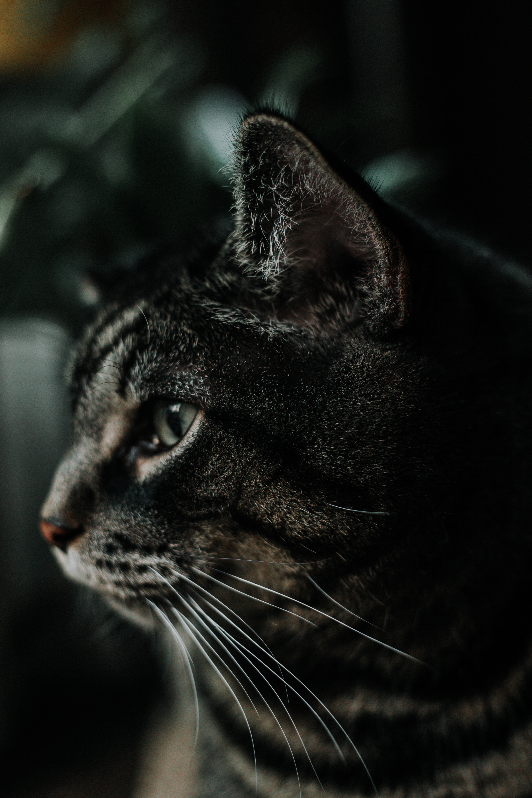

As of 2007, the domestic cat was the second-most popular pet in the U.S. by number of pets owned, after freshwater fish. As of 2010, it was ranked the third-most popular pet in the UK, after fish and dogs, with around 8 million being owned.
The cat or domestic cat (Felis catus) is a small carnivorous mammal. It is the only domesticated species in the family Felidae. The cat is either a house cat, kept as a pet; or a feral cat, freely ranging and avoiding human contact. A house cat is valued by humans for companionship and for its ability to hunt rodents. About 60 cat breeds are recognized by various cat registries.
Cats are similar in anatomy to the other felid species, with a strong flexible body, quick reflexes, sharp teeth and retractable claws adapted to killing small prey. They are predators who are most active at dawn and dusk. Cats can hear sounds too faint or too high in frequency for human ears, such as those made by mice and other small animals. Compared to humans, they see better in the dark (they see in near total darkness) and have a better sense of smell, but poorer color vision. Cats, despite being solitary hunters, are a social species. Cat communication includes the use of vocalizations including mewing, purring, trilling, hissing, growling and grunting as well as cat-specific body language. Cats also communicate by secreting and perceiving pheromones.
Female domestic cats can have kittens from spring to late autumn, with litter sizes ranging from two to five kittens. Domestic cats can be bred and shown as registered pedigreed cats, a hobby known as cat fancy. Failure to control the breeding of pet cats by spaying and neutering, as well as abandonment of pets, has resulted in large numbers of feral cats worldwide, contributing to the extinction of entire bird species, and evoking population control.
It was long thought that cat domestication was initiated in Egypt, because cats in ancient Egypt were venerated since around 3100 BC. However, the earliest indication for the taming of an African wildcat (F. lybica) was found in Cyprus, where a cat skeleton was excavated close by a human Neolithic grave dating to around 7500 BC. African wildcats were probably first domesticated in the Near East. The leopard cat (Prionailurus bengalensis) was tamed independently in China around 5500 BC, though this line of partially domesticated cats leaves no trace in the domestic cat populations of today.

Cats come in an amazing variety of colors and patterns. It is not unusual to see many different colors in the same litter of kittens. There are two primary colors in cats – black and red. All other colors are variations of black and red with the exception of solid white. White is a masking gene. It hides – masks – all other color. So a solid white cat is either black or red but the color is hidden by the white.
The domesticated cat comes for a long line of predators that had to hunt to survive. Their natural prey included birds, reptiles and small rodents, including mice. This inner predator is why your cat perks up when birds fly by the window and small cat toys to bat around are so fascinating.